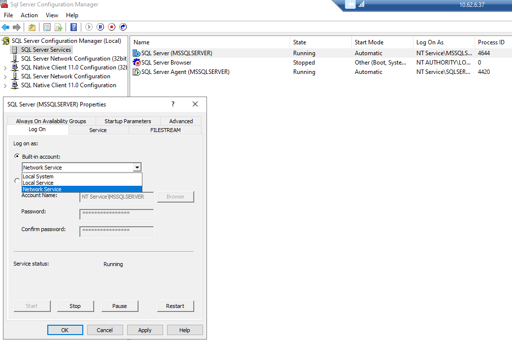

Symptom
The Netwrix Threat Prevention Database Maintenance job fails with this error:
The job failed. Unable to determine if the owner ("Domain/User") of job SiDbMainJob has server access (reason: Could not obtain information about Windows NT group/user 'Domain/User', error code 0x5 [SQLSTATE42000] (Error 15404))
Cause
The account running the SQL Server Service on the SQL server does not have access to Active Directory, i.e., a local account.
Resolution
-
On SQL server, launch SQL Server Configuration Manager.
-
Select SQL Server Services in the navigation pane.
-
Right-click SQL Server (Instance name) > Click Properties > Click Log On Tab > Select Built-in account > Select Network Service from the drop-down menu.
-
Click Apply to save the change and click Restart.
-
Repeat steps 1-4 for SQL Server Agent (Instance name).
